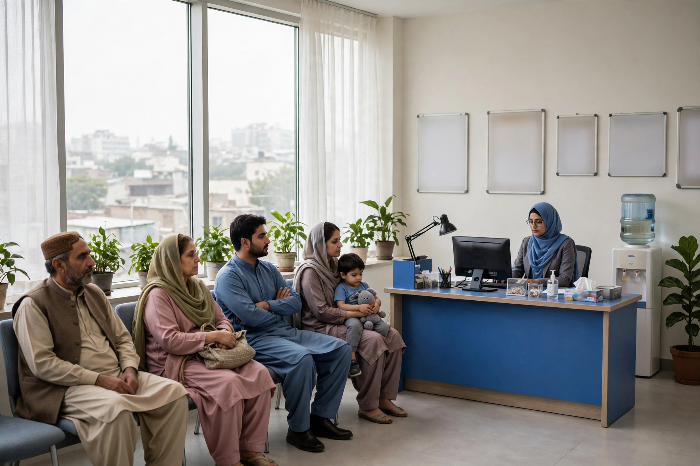

Dera Ghazi Khan serves as a medical centre for a wide area. Patients travel in from surrounding towns and villages to see specialists, get tests done at laboratories, and visit hospitals they cannot find closer to home. Most of these journeys now begin with a search: the name of a condition, a type of specialist, or a clinic a relative recommended. What Google shows in that moment decides which clinic gets the call.
Healthcare searches carry more weight than shopping searches, because the patient is worried and the decision matters. Clear, honest online information is therefore both good service and good SEO. This article explains what clinics, specialists, labs and hospitals in Dera Ghazi Khan should put online, and what to avoid. Zaheer Seo Expert is based in Layyah, with no office in Dera Ghazi Khan, and helps clinics from there online and by phone.
How Patients Search for Care in the City
Patients rarely search for a clinic’s exact name unless someone recommended it. They search by need: a type of specialist, a symptom in plain words, a test they were told to get, or a hospital department. Many add the city name or rely on their phone’s location. Evening and weekend searches are common, because that is when families sit together and decide where to go.
Your online presence should be written around these needs, not around the clinic’s internal structure. List the conditions and treatments in the words patients use, alongside the correct medical terms, so both a worried parent and a referring doctor can find the right page.

One Clear Profile for Each Location and Department
Every clinic location needs its own complete Google Business Profile with the right category, whether that is medical clinic, diagnostic centre or a specific speciality. Hospitals with several departments should make sure patients can tell, from the profile and website, which department handles what, and where each one is.
Timings are critical in healthcare. Patients plan around clinic hours, so keep consultant timings, lab hours and emergency information accurate, and update them when a doctor’s schedule changes. A patient who travels across the city and finds the specialist absent rarely returns. The basics of profile management are covered in our article on Google Maps for Dera Ghazi Khan businesses.
Also make the phone number impossible to miss, on the profile and on every page of the website. In urgent moments a patient or a worried relative will not fill in a form or hunt through menus; they will call the clinic whose number they can tap at once, and go elsewhere if yours cannot be found quickly.
Pages That Answer Patient Questions Honestly
A useful clinic website gives each major service its own page: the speciality, what happens at a first visit, which tests are done on site, and how to book. Write in calm, plain language. Patients comparing two specialists often choose the one whose page explained things clearly, because clarity feels like competence before they ever meet the doctor.
Be careful with claims. Never promise cures or results, and do not publish medical claims you cannot support. Honest, general information about services and facilities is both safe and effective. If your clinic takes patients from across the region, say which areas patients commonly travel from, without pretending to have branches there.
- A page for each speciality or major service
- Consultant timings and booking method stated clearly
- Tests and facilities listed in plain words
- No promises of cures or guaranteed results
Reviews and Reputation in Healthcare
Patients read reviews for clinics more carefully than for almost any other business, and they read the replies too. A clinic that thanks patients, answers concerns calmly and never argues in public builds trust even when an occasional review is unfair. Encourage reviews gently, for example after a completed treatment, and never offer anything in exchange for them.
Never respond to a review by discussing the patient’s condition or treatment in public. A short, kind reply inviting the person to contact the clinic directly protects privacy and still shows other readers that the clinic listens.
Local SEO Help, Delivered From Layyah
Clinics in Dera Ghazi Khan compete with each other and with the pull of larger cities, so being easy to find locally matters. A complete profile, department pages written around patient searches, and accurate timings form the core of that visibility. You can read more about the wider approach on our page for SEO services in Dera Ghazi Khan.
Zaheer Seo Expert is based in Layyah and serves Dera Ghazi Khan clinics from there. Profiles and websites are managed online, and progress is discussed by phone, which suits busy clinical schedules. Call or email to talk about what your clinic actually needs before deciding anything.
Frequently Asked Questions
What should a clinic put on Google first?
Start with a complete Google Business Profile: correct category, full address, an accurate map pin, consultant timings, a working phone number and real photos of the clinic. These details answer most patient searches before a website is even opened.
Can a specialist rank for searches about a condition?
A specialist can appear for searches about the treatments and services they genuinely offer, especially with a clear service page and profile. Content must stay honest and general, and never promise cures or specific results to patients.
How should a clinic reply to a negative review?
Reply briefly and kindly, without discussing the patient’s medical details in public. Thank them for the feedback and invite them to contact the clinic directly so the matter can be looked into properly and privately.
Do you have an office in Dera Ghazi Khan for clinic clients?
No. Zaheer Seo Expert is based in Layyah and serves Dera Ghazi Khan from there. All SEO and profile work is done online and by phone, so clinic staff do not need to travel or host visits.
Want More Customers From Google?
Call 0327 7350830 or email seozaheer14@gmail.com. Zaheer Seo Expert, Layyah - Rajan Shah Road, Rana Nagar, Chak 116 TDA, Pakistan. Open 24 hours.
Get Your SEO Strategy →